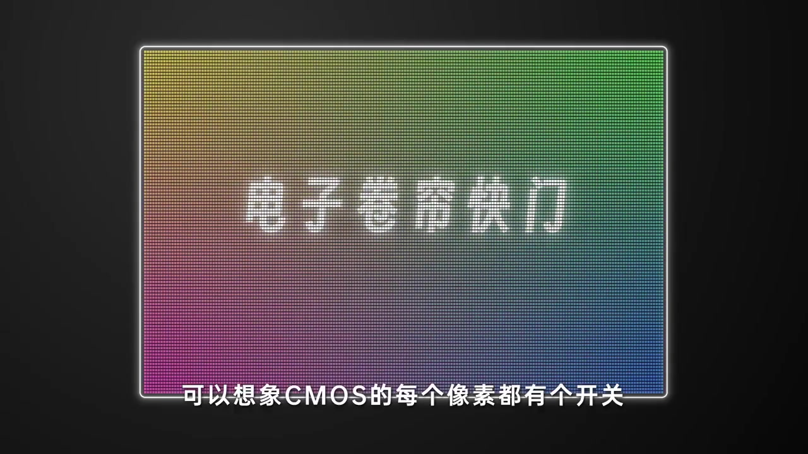
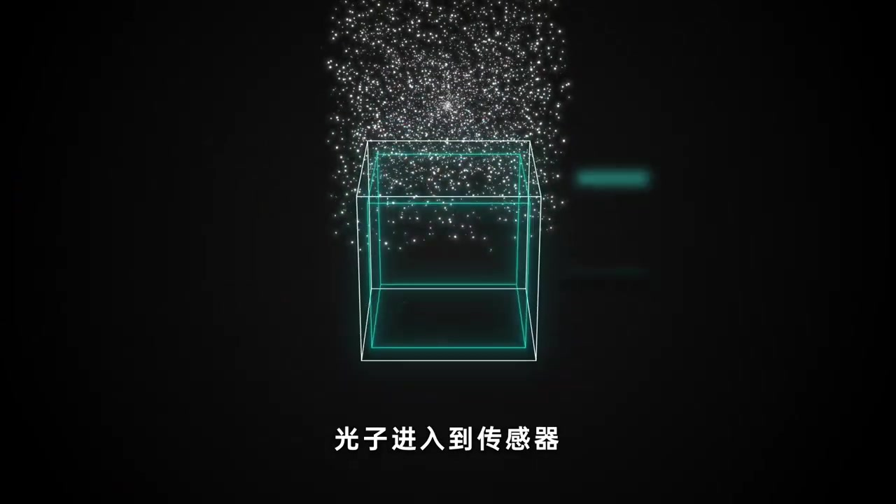
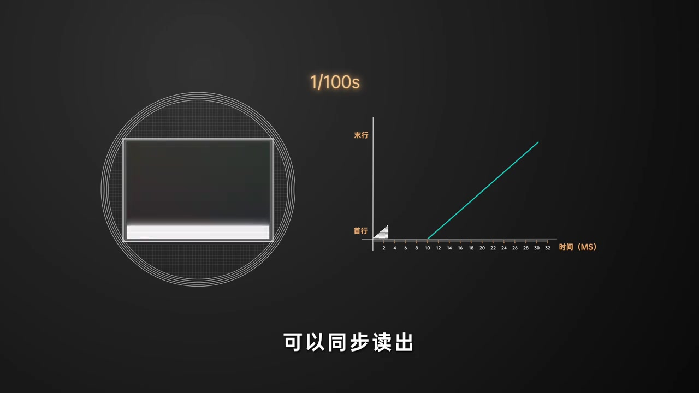
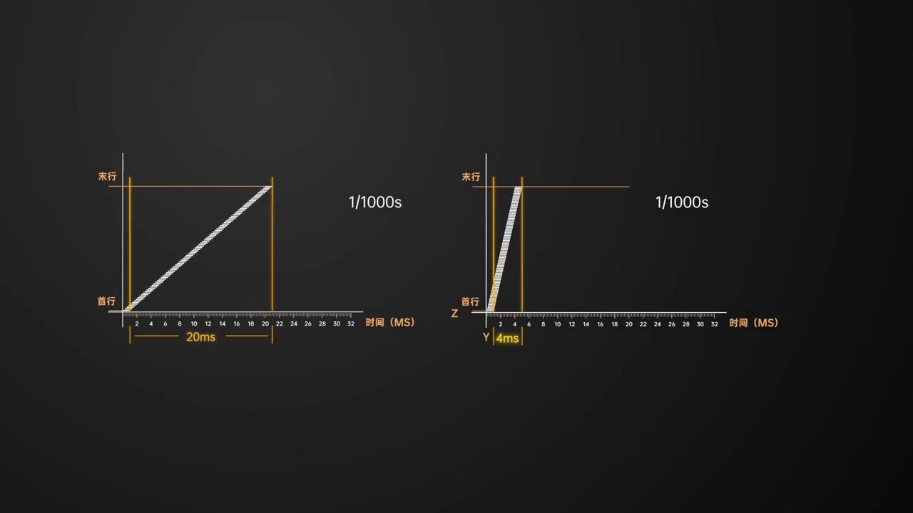
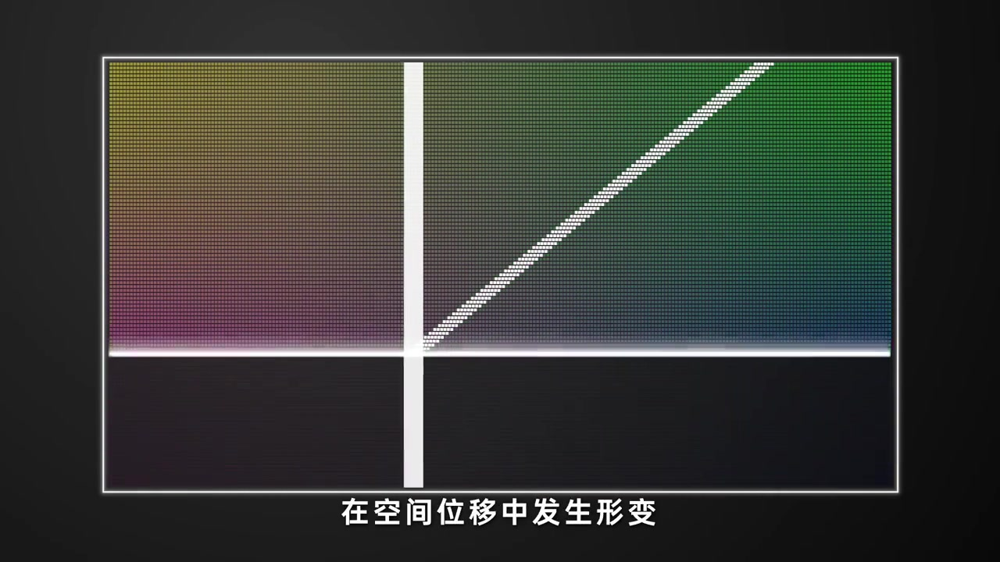
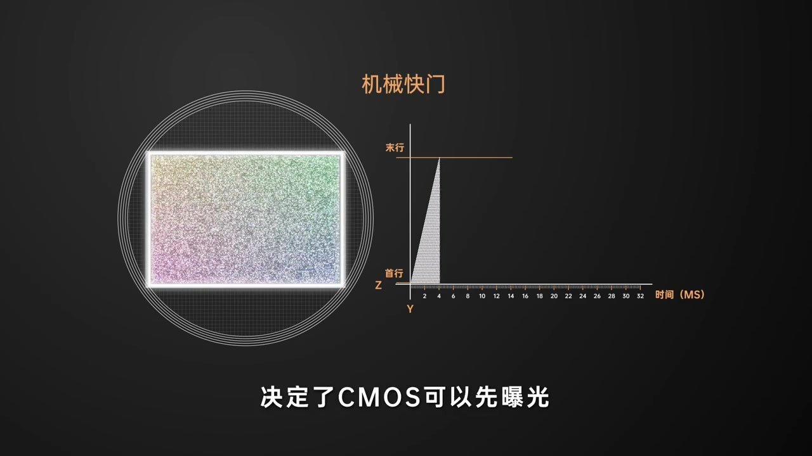
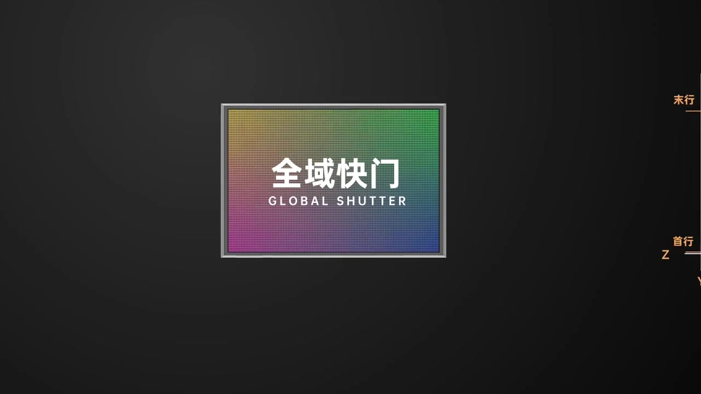

开场：把 CMOS 想成「每个像素都有开关」
彩色像素阵列铺满画面，大标题直接写「电子卷帘快门」。旁白没有先甩术语，而是让你想象：CMOS 上每个像素都像一扇小门——打开就接收光线，关闭则重置。
画面字幕：「可以想象CMOS的每个像素都有个开关」
按下快门后，传感器清空电荷，再重新开始感光。整集后面的读出时差、果冻形变，都建立在这个「开关逐行工作」的前提上。
说明：Whisper 常把 CMOS 识成「SIMOS」，「关闭则重置」识成「关闭子重置」，「读出」识成「读书」，「光电二极管」识成「光电2G网」，「模数转换器」识成「魔术转换器」，「果冻效应」识成「活动／果动效应」，「机械幕帘」识成「机械木莲」，「信噪比」识成「性造比」。下文叙述以可见字幕与动画为准；末尾仍完整保留全部 Whisper 分段。

光子进传感器：从光到数字的一串转化
线框立方体像一只「传感器容器」，白色粒子从上方落下——旁白说光子进入传感器。接着链路被拆开：光电二极管把光变成电子，电容变成电压，PGA 放大，再经 ADC（模数转换器）变成数字信号。
画面字幕：「光子进入到传感器」
这一段不是在讲构图，而是在铺「为什么后面会有读出瓶颈」：电压到数字信号，并不能整幅瞬间完成。

读出只能逐行：20ms 斜线钉死时间差
旁白强调：从电压到数字信号的读出，只能依次逐行进行。多数 CMOS 性能受限，读出速度动辄二三十毫秒。动画以 20ms 为例，在「首行—末行 × 时间」坐标上画出一条斜线。
画面字幕：「可以同步读出」
要想每行曝光结束时立刻同步读出，电子卷帘就只能严格沿着这条斜线（也就是读出速度）去开闭各行。快门时间怎么调，帧内首末行的时间差仍是约 20ms——远大于旁白对照的机械快门约 4ms。


时差落地：运动物体开始「歪」
较高时间差会带来严重问题。画面用大标题点出效应名（Whisper 作「活动效应」；后文亦说到「果冻效应」），并配字幕「存在时差」：每行记录时刻不同，运动物体在空间位移中发生形变——直线变斜、旋转变扭曲。
画面字幕：「在空间位移中发生形变」
旁白用约 3300 万像素的 CMOS 举例：拍一张要读出约 4672 行；按 20ms 读出算，每行时差约 4.3 微秒。听上去极短，但对高速物体已足够造成明显变形。机械快门面对高速也会有类似效应，只是比电子卷帘轻得多。

控制形变：只剩两条路
旁白把对策收成两句：一是减少相对运动，二是提高读出速度。没有第三条「魔法开关」——要么让场景慢下来，要么让传感器读得更快。
关键判断：电子卷帘的形变根子在读出时差，不在曝光时间本身。
追问：同样要读出，机械快门为何更稳？
有人会问：机械快门最后也要读出数据，为什么不受同样影响？旁白指向机械幕帘的物理结构——CMOS 可以先完成曝光，再逐行读出；读出空档里后幕帘遮住光线，传感器虽处在感光状态，却没有新的光进来，因此读出过程不再叠加曝光时差。
画面字幕：「决定了CMOS可以先曝光」

能不能同时曝光？答案是全域快门——但贵
电子快门若强行整幅同时开启感光，后读出的行会感光更久，画面曝光不均；若同时关闭，未读出信息会被重置。旁白自问：那有没有办法同时曝光？有——全域快门（Global Shutter）。
画面大字：「全域快门 GLOBAL SHUTTER」
全域快门可同时开电路曝光，再把电子先挪到存储单元，之后再读出，因而没有行间曝光时差，也能避免果冻效应。代价是：每像素额外存储单元会削弱收光能力，影响信噪比与画质；旁白收尾一句——最大的影响还是「贵」。
